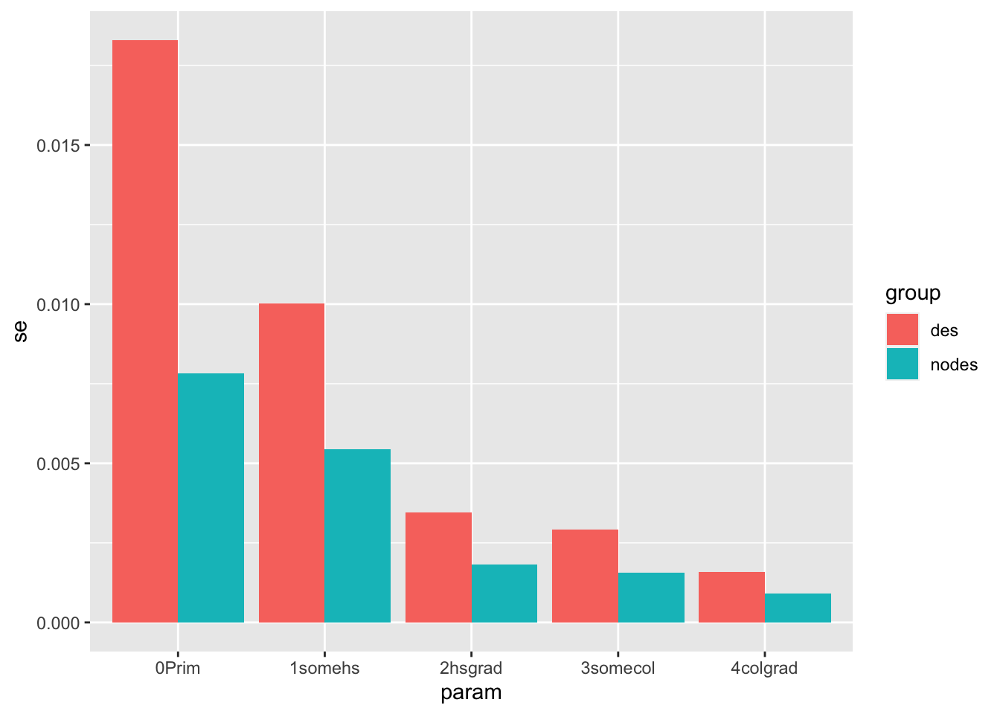
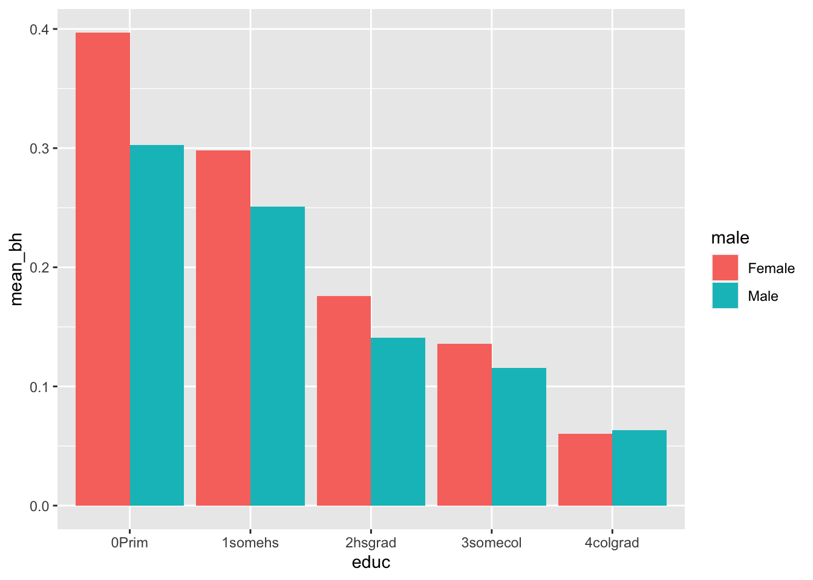
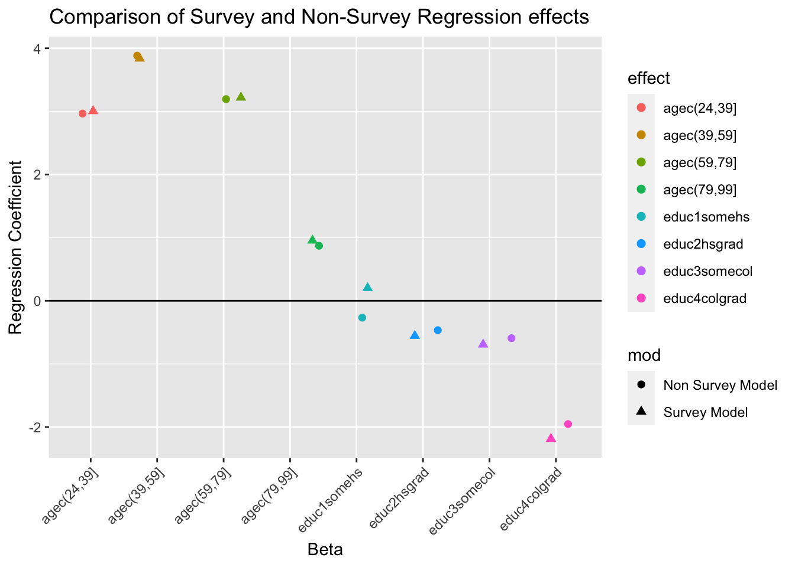

mean(dat$y)[1] 2.8A systematic method for gathering information from a sample of entities for the purposes of constructing quantitative descriptors of the attributes of the larger population of which the entities are members
Sampling units - where information will be collected from
Sampling frame - the set of sampling units containing distinct sets of population members
Surveys with complex sample designs will often have:
A weight is used to indicate the relative strength of an observation.
In the simplest case, each observation is counted equally.
For example, if we have five observations, and wish to calculate the mean, we just add up the values and divide by 5.
library(htmlTable)
y<-c(4,2,1,5,2)
wt<-c(1,2,4,1,2)
dat<-data.frame(y=y, weight=wt)
knitr::kable(dat)| y | weight |
|---|---|
| 4 | 1 |
| 2 | 2 |
| 1 | 4 |
| 5 | 1 |
| 2 | 2 |
Unweighted sample mean
mean(dat$y)[1] 2.8Weighted sample mean
library(questionr)
wtd.mean(x=dat$y,
weights=dat$weight)[1] 2.1With unweighted data, each case is counted equally.
Unweighted data represent only those in the sample who provide data.
With weighted data, each case is counted relative to its representation in the population.
Weights allow analyses that represent the target population.
Weights compensate for collecting data from a sample rather than the entire population and for using a complex sample design.
Weights adjust for differential selection probabilities and reduce bias associated with non-response by adjusting for differential nonresponse. Weights are used when estimating characteristics of the population.
Standard errors are produced for estimates from sample surveys. They are a measure of the variance in the estimates associated with the selected sample being one of many possible samples.
Standard errors are used to test hypotheses and to study group differences.
Using inaccurate standard errors can lead to identification of statistically significant results where none are present and vice versa
The usual standard error formula assumes a simple random sample.
Software packages designed for simple random samples tend to underestimate the standard errors for complex sample designs.
Standard errors for estimates from a complex sample must account for the within cluster/ across cluster variation.
Special software can make the adjustment, or this adjustment can be approximated using the design effect.
There are basically 3 ways in which software estimates variances: 1) Naive method 2) Taylor series approximation 3) Balanced or Jackknife replication
This example will cover the use of R functions for analyzing complex survey data. Most social and health surveys are not simple random samples of the population, but instead consist of respondents from a complex survey design.
These designs often stratify the population based on one or more characteristics, including geography, race, age, etc. In addition the designs can be multi-stage, meaning that initial strata are created, then respondents are sampled from smaller units within those strata.
An example would be if a school district was chosen as a sample strata, and then schools were then chosen as the primary sampling units (PSUs) within the district. From this 2 stage design, we could further sample classrooms within the school (3 stage design) or simply sample students (or whatever our unit of interest is).
Non-random sampling
Population consists of known sub-groups called clusters
A 2 -stage sample might be households within neighborhoods, or children within schools
This type of sampling leads to dependent observations
Here’s a picture of this:

A second feature of survey data we often want to account for is differential respondent weighting. This means that each respondent is given a weight to represent how common that particular respondent is within the population. This reflects the differenital probability of sampling based on respondent characteristics.
As demographers, we are also often interested in making inference for the population, not just the sample, so our results must be generalizable to the population at large. Sample weights are used in the process as well.
When such data are analyzed, we must take into account this nesting structure (sample design) as well as the respondent sample weight in order to make valid estimates of ANY statistical parameter. If we do not account for design, the parameter standard errors will be incorrect, and if we do not account for weighting, the parameters themselves will be incorrect and biased.
In general there are typically three things we need to find in our survey data codebooks: The sample strata identifier, the sample primary sampling unit identifier (often called a cluster identifier) and the respondent survey weight. These will typically have one of these names and should be easily identifiable in the codebook.
Statistical software will have special routines for analyzing these types of data and you must be aware that the diversity of statistical routines that generally exists will be lower for analyzing complex survey data, and some forms of analysis may not be available!
See Thomas Lumley’s Book on this!
Below I illustrate the use of survey characteristics when conducting descriptive analysis of a survey data set and a linear regression model estimated from that data. For this example I am using 2016 CDC Behavioral Risk Factor Surveillance System (BRFSS) SMART metro area survey data. Link
#load brfss
library(car)Loading required package: carDatalibrary(stargazer)
Please cite as: Hlavac, Marek (2022). stargazer: Well-Formatted Regression and Summary Statistics Tables. R package version 5.2.3. https://CRAN.R-project.org/package=stargazer library(survey)Loading required package: gridLoading required package: MatrixLoading required package: survival
Attaching package: 'survey'The following object is masked from 'package:graphics':
dotchartlibrary(questionr)
library(dplyr)
Attaching package: 'dplyr'The following object is masked from 'package:car':
recodeThe following objects are masked from 'package:stats':
filter, lagThe following objects are masked from 'package:base':
intersect, setdiff, setequal, unionlibrary(forcats)
library(tidyverse)── Attaching core tidyverse packages ──────────────────────── tidyverse 2.0.0 ──
✔ ggplot2 3.4.2 ✔ stringr 1.5.0
✔ lubridate 1.9.2 ✔ tibble 3.2.1
✔ purrr 1.0.1 ✔ tidyr 1.3.0
✔ readr 2.1.4 ── Conflicts ────────────────────────────────────────── tidyverse_conflicts() ──
✖ tidyr::expand() masks Matrix::expand()
✖ dplyr::filter() masks stats::filter()
✖ dplyr::lag() masks stats::lag()
✖ tidyr::pack() masks Matrix::pack()
✖ dplyr::recode() masks car::recode()
✖ purrr::some() masks car::some()
✖ tidyr::unpack() masks Matrix::unpack()
ℹ Use the conflicted package (<http://conflicted.r-lib.org/>) to force all conflicts to become errorslibrary(gtsummary)
set_gtsummary_theme(theme_gtsummary_compact(set_theme = TRUE))Setting theme `Compact`
Setting theme `Compact`brfss20<- readRDS(url("https://github.com/coreysparks/DEM7283/blob/master/data/brfss20sm.rds?raw=true"))
### Fix variable names
names(brfss20) <- tolower(gsub(pattern = "_",replacement = "",x = names(brfss20)))Be sure to always check your codebooks!
Here is the codebook for the BRFSS
#Poor or fair self rated health
brfss20$badhealth<-Recode(brfss20$genhlth, recodes="4:5=1; 1:3=0; else=NA")
#sex
brfss20$male<-as.factor(ifelse(brfss20$sex==1, "Male", "Female"))
#race/ethnicity
brfss20$black<-Recode(brfss20$racegr3,
recodes="2=1; 9=NA; else=0")
brfss20$white<-Recode(brfss20$racegr3,
recodes="1=1; 9=NA; else=0")
brfss20$other<-Recode(brfss20$racegr3,
recodes="3:4=1; 9=NA; else=0")
brfss20$hispanic<-Recode(brfss20$racegr3,
recodes="5=1; 9=NA; else=0")
brfss20$race_eth<-Recode(brfss20$racegr3,
recodes="1='nhwhite'; 2='nh black'; 3='nh other';4='nh multirace'; 5='hispanic'; else=NA",
as.factor = T)
brfss20$race_eth<-relevel(brfss20$race_eth,
ref = "nhwhite")
#insurance
brfss20$ins<-Recode(brfss20$hlthpln1,
recodes ="7:9=NA; 1=1;2=0")
#income grouping
brfss20$inc<-ifelse(brfss20$incomg==9,
NA,
brfss20$incomg)
#education level
brfss20$educ<-Recode(brfss20$educa,
recodes="1:2='0Prim'; 3='1somehs'; 4='2hsgrad'; 5='3somecol'; 6='4colgrad';9=NA",
as.factor=T)
brfss20$educ<-fct_relevel(brfss20$educ,'0Prim','1somehs','2hsgrad','3somecol','4colgrad' )
#employment
brfss20$employ<-Recode(brfss20$employ1,
recodes="1:2='Employed'; 2:6='nilf'; 7='retired'; 8='unable'; else=NA",
as.factor=T)
brfss20$employ<-relevel(brfss20$employ, ref='Employed')
#marital status
brfss20$marst<-Recode(brfss20$marital,
recodes="1='married'; 2='divorced'; 3='widowed'; 4='separated'; 5='nm';6='cohab'; else=NA",
as.factor=T)
brfss20$marst<-relevel(brfss20$marst, ref='married')
#Age cut into intervals
brfss20$agec<-cut(brfss20$age80,
breaks=c(0,24,39,59,79,99))
#BMI, in the brfss20 the bmi variable has 2 implied decimal places, so we must divide by 100 to get real bmi's
brfss20$bmi<-brfss20$bmi5/100
brfss20$obese<-ifelse(brfss20$bmi>=30, 1, 0)The is.na() function is very helpful to find missing values. The code below filters out anyone who is missing for the sex variable (sex != 9) or is missing the educ or badhealth.
brfss20<-brfss20%>%
filter(sex!=9,
is.na(educ)==F,
is.na(badhealth)==F)First, we will do some descriptive analysis, such as means and cross tabulations. There are LOTS of ways to do this. The table() function is an easy and cheap way to get frequencies of a variable. It will return the count of the frequency of the levels of a variable. This can be called a R by C table, for Rows by Columns. The simplest version of this is a a 2*2 table when both variables have only two response levels.
table(brfss20$badhealth, brfss20$male)
Female Male
0 89115 78286
1 15207 11292Here is another table of the health status by level of education.
#Raw frequencies of bad health by education
table(brfss20$badhealth, brfss20$educ)
0Prim 1somehs 2hsgrad 3somecol 4colgrad
0 2398 4983 37371 43861 78788
1 1438 2295 8700 7672 6394This is not terribly useful, and we typically want proportions.
The prop.table() function will form proportions of a table made from table()
#column percentages
100*prop.table(table(brfss20$badhealth, brfss20$educ), margin=2)
0Prim 1somehs 2hsgrad 3somecol 4colgrad
0 62.513034 68.466612 81.116103 85.112452 92.493719
1 37.486966 31.533388 18.883897 14.887548 7.506281We see from this that a higher proportion of people with primary school education have fair or poor health compared to those with more education.
One of the most elementary statistical test for categorical data is the \(\chi^2\) test. It tests for independence of two or more categorical variables, tabulated in a table() analysis. We call this a bi-variate test usually because we consider two variables,
#basic chi square test of independence
chisq.test(table(brfss20$badhealth, brfss20$educ))
Pearson's Chi-squared test
data: table(brfss20$badhealth, brfss20$educ)
X-squared = 7681.7, df = 4, p-value < 2.2e-16So the \(\chi^2\) statistic is large and the p - value associated with it is very small, suggesting that the health indicator is not independent of education.
So basically all of these numbers are incorrect, since they all assume random sampling. Now, we must tell R what the survey design is and what the weight variable is, then we can re-do these so they are correct.
Now we identify the survey design.
ids = PSU identifers, strata=strata identifiers, weights=sampling weights, data= the data frame where these variables are located.
Lastly, I only include respondents with NON-MISSING case weights.
Now I make the survey design object. You may be required to specify two options here:
survey.lonely.psu This means that some of the strata only have 1 PSU within them. This does not allow for within strata variance to be calculated. So we often have to tell the computer to do something here. Two valid options are “adjust”, to center the stratum at the population mean rather than the stratum mean, and “average” to replace the variance contribution of the stratum by the average variance contribution across strata. (from ?surveyoptions)
Nesting of PSU within strata. By default, PSUs have numeric identifiers that can overlap between strata. By specifying nest=T, we tell R to re-lable the PSUs so they are unique across strata. If your survey requires this, it will throw a warning message.
library(srvyr)
Attaching package: 'srvyr'The following object is masked from 'package:stats':
filteroptions(survey.lonely.psu = "adjust")
brfss20$crap <- rnorm(193900, 1, 1)
des<-svydesign(ids = ~1, strata=~ststr, weights=~mmsawt, data = brfss20 )
desStratified Independent Sampling design (with replacement)
svydesign(ids = ~1, strata = ~ststr, weights = ~mmsawt, data = brfss20)Now , we re-do the analysis from above using only weights:
#counts
cat<-wtd.table(brfss20$badhealth,
brfss20$educ,
weights = brfss20$mmsawt)
#proportions
prop.table(
cat,
margin=2) 0Prim 1somehs 2hsgrad 3somecol 4colgrad
0 0.65224707 0.72493928 0.84189380 0.87352602 0.93825022
1 0.34775293 0.27506072 0.15810620 0.12647398 0.06174978#compare that with the original, unweighted proportions
prop.table(table(brfss20$badhealth,
brfss20$educ),
margin=2)
0Prim 1somehs 2hsgrad 3somecol 4colgrad
0 0.62513034 0.68466612 0.81116103 0.85112452 0.92493719
1 0.37486966 0.31533388 0.18883897 0.14887548 0.07506281There are differences, notably that the prevalence of poor SRH is higher in the sample than the population. This is important!
#Now consider the full sample design + weights
cat<-svyby(formula = ~badhealth,
by=~educ,
design = des,
FUN=svymean)
svychisq(~badhealth+educ, design = des)Pearson's X^2: Rao & Scott adjustmentdata: svychisq(~badhealth + educ, design = des) F = 343.93, ndf = 3.1456e+00, ddf = 6.0621e+05, p-value < 2.2e-16
knitr::kable(cat,
caption = "Survey Estimates of Poor SRH by Sex",
align = 'c')| educ | badhealth | se | |
|---|---|---|---|
| 0Prim | 0Prim | 0.3477529 | 0.0182995 |
| 1somehs | 1somehs | 0.2750607 | 0.0100143 |
| 2hsgrad | 2hsgrad | 0.1581062 | 0.0034489 |
| 3somecol | 3somecol | 0.1264740 | 0.0029230 |
| 4colgrad | 4colgrad | 0.0617498 | 0.0015838 |
Which gives the same %’s as the weighted table above, but we also want the correct standard errors for our bad health prevalence.
The svyby() function will calculate statistics by groups, in this case we want the % in bad health by each level of education. The %’s can be gotten using the svymean() function, which finds means of variables using survey design:
sv.table<-svyby(formula = ~badhealth,
by = ~educ,
design = des,
FUN = svymean,
na.rm=T)knitr::kable(sv.table,
caption = "Survey Estimates of Poor SRH by Education",
align = 'c')| educ | badhealth | se | |
|---|---|---|---|
| 0Prim | 0Prim | 0.3477529 | 0.0182995 |
| 1somehs | 1somehs | 0.2750607 | 0.0100143 |
| 2hsgrad | 2hsgrad | 0.1581062 | 0.0034489 |
| 3somecol | 3somecol | 0.1264740 | 0.0029230 |
| 4colgrad | 4colgrad | 0.0617498 | 0.0015838 |
#Make a survey design that is random sampling - no survey information
nodes<-svydesign(ids = ~1, weights = ~1, data = brfss20)
sv.table<-svyby(formula = ~factor(badhealth),
by = ~educ,
design = nodes,
FUN = svymean,
na.rm=T)knitr::kable(sv.table,
caption = "Estimates of Poor SRH by Education - No survey design",
align = 'c')| educ | factor(badhealth)0 | factor(badhealth)1 | se.factor(badhealth)0 | se.factor(badhealth)1 | |
|---|---|---|---|---|---|
| 0Prim | 0Prim | 0.6251303 | 0.3748697 | 0.0078160 | 0.0078160 |
| 1somehs | 1somehs | 0.6846661 | 0.3153339 | 0.0054465 | 0.0054465 |
| 2hsgrad | 2hsgrad | 0.8111610 | 0.1888390 | 0.0018234 | 0.0018234 |
| 3somecol | 3somecol | 0.8511245 | 0.1488755 | 0.0015681 | 0.0015681 |
| 4colgrad | 4colgrad | 0.9249372 | 0.0750628 | 0.0009028 | 0.0009028 |
And we see the same point estimates of our prevalences as in the simple weighted table, but the standard errors have now been adjusted for survey design as well, so they are also correct. You also see they are much larger than the ones we computed above, which assumed random sampling.
#Make a survey design that is random sampling - no survey information
des<-svydesign(ids =~1, strata = ~ststr, weights = ~mmsawt, data = brfss20)
sv.table2<-svyby(formula = ~factor(badhealth),
by = ~educ,
design = des,
FUN = svymean,
na.rm=T)knitr::kable(sv.table2,
caption = "Estimates of Poor SRH by Education - With survey design",
align = 'c',
format = "html")| educ | factor(badhealth)0 | factor(badhealth)1 | se.factor(badhealth)0 | se.factor(badhealth)1 | |
|---|---|---|---|---|---|
| 0Prim | 0Prim | 0.6522471 | 0.3477529 | 0.0182995 | 0.0182995 |
| 1somehs | 1somehs | 0.7249393 | 0.2750607 | 0.0100143 | 0.0100143 |
| 2hsgrad | 2hsgrad | 0.8418938 | 0.1581062 | 0.0034489 | 0.0034489 |
| 3somecol | 3somecol | 0.8735260 | 0.1264740 | 0.0029230 | 0.0029230 |
| 4colgrad | 4colgrad | 0.9382502 | 0.0617498 | 0.0015838 | 0.0015838 |
sv1 <- data.frame(param = sv.table[, 1],
se = c(sv.table[, 5], sv.table2[,5]),
group = c(rep("nodes",5), rep("des", 5)))
sv1%>%
ggplot(aes(x=param,y=se, fill=group))+
geom_col(position = "dodge")
There’s this great R package, tableone that does this stuff very nicely and incorporates survey design too. Here’s an example of using it to generate your bi-variate tests like above:
library(tableone)
#not using survey design
t1<-CreateTableOne(vars = c( "badhealth"),
strata="educ",
data = brfss20)
#t1<-print(t1, format="p")
print(t1,format="p" ) Stratified by educ
0Prim 1somehs 2hsgrad 3somecol
n 3836 7278 46071 51533
badhealth (mean (SD)) 0.37 (0.48) 0.32 (0.46) 0.19 (0.39) 0.15 (0.36)
Stratified by educ
4colgrad p test
n 85182
badhealth (mean (SD)) 0.08 (0.26) <0.001 #, strata = "badhealth", test = T,#using survey design
st1<-svyCreateTableOne(vars = c("badhealth"),
strata = "educ",
test = T,
data = des)
print(st1,
format="p") Stratified by educ
0Prim 1somehs 2hsgrad
n 6688472.52 10662249.38 38002206.55
badhealth (mean (SD)) 0.35 (0.48) 0.28 (0.45) 0.16 (0.36)
Stratified by educ
3somecol 4colgrad p test
n 44184385.27 49844844.72
badhealth (mean (SD)) 0.13 (0.33) 0.06 (0.24) <0.001 When reporting descriptive statistics, these are the correct summaries to provide.
You can include survey design information directly into a dplyr pipe using the srvyr package. To generate survey corrected frequencies or means, the traditional group_by() and summarise() are your friends.
library(srvyr)
brfss20%>%
as_survey_design(strata = ststr,
weights = mmsawt)%>%
group_by(educ, male)%>%
summarise(mean_bh = survey_mean(badhealth, na.rm=T))%>%
ungroup()%>%
ggplot(aes(x=educ, y = mean_bh, fill=male))+geom_col(position="dodge")
The package gtsummary package provides a wonderful way to summarise and create tables from a survey data source.
library(gtsummary)
brfss20%>%
mutate(bh = as.factor(badhealth))%>%
as_survey_design( strata =ststr,
weights = mmsawt)%>%
select(bh, educ)%>%
tbl_svysummary(by = educ,
label = list(badhealth = "Fair/Poor Health"),
statistic = list(all_categorical() ~ "{n} ({p}%)"))%>%
add_p()%>%
#add_n()%>%
modify_header(all_stat_cols() ~ "**{level}**")%>%
bold_labels() %>%
modify_spanning_header(all_stat_cols() ~ "**Educational Attainment**")| Characteristic | Educational Attainment | p-value2 | ||||
|---|---|---|---|---|---|---|
| 0Prim1 | 1somehs1 | 2hsgrad1 | 3somecol1 | 4colgrad1 | ||
| bh | <0.001 | |||||
| 0 | 4,362,537 (65%) | 7,729,483 (72%) | 31,993,822 (84%) | 38,596,210 (87%) | 46,766,936 (94%) | |
| 1 | 2,325,936 (35%) | 2,932,766 (28%) | 6,008,385 (16%) | 5,588,175 (13%) | 3,077,908 (6.2%) | |
| 1 n (%) | ||||||
| 2 chi-squared test with Rao & Scott’s second-order correction | ||||||
Which produces a nice table showing the mean of the outcome, as well as a survey-corrected test of independence.
Next we apply this logic to a regression case. First we fit the OLS model for our BMI outcome using education and age as predictors:
fit1<-lm(bmi~educ+agec,
data=brfss20)Next we incorporate case weights
fit2<-lm(bmi~educ+agec,
data=brfss20,
weights = mmsawt)Now we will incorporate design effects as well:
fit3<-svyglm(bmi~educ+agec,
design = des,
family=gaussian)Now I make a table to show the results of the three models:
stargazer(fit1, fit2, fit3,
style="demography", type="html",
column.labels = c("OLS", "Weights Only", "Survey Design"),
title = "Regression models for BMI using survey data - BRFSS 2016",
covariate.labels=c("PrimarySchool", "SomeHS", "SomeColl", "CollGrad", "Age 24-39","Age 39-59" ,"Age 59-79", "Age 80+"),
keep.stat="n",
model.names=F,
align=T,
ci=T)| bmi | |||
| OLS | Weights Only | Survey Design | |
| Model 1 | Model 2 | Model 3 | |
| PrimarySchool | -0.267 | 0.201* | 0.201 |
| (-0.537, 0.003) | (0.014, 0.389) | (-0.547, 0.950) | |
| SomeHS | -0.465*** | -0.556*** | -0.556 |
| (-0.698, -0.233) | (-0.718, -0.394) | (-1.219, 0.107) | |
| SomeColl | -0.593*** | -0.693*** | -0.693* |
| (-0.824, -0.361) | (-0.854, -0.533) | (-1.352, -0.034) | |
| CollGrad | -1.953*** | -2.186*** | -2.186*** |
| (-2.182, -1.724) | (-2.346, -2.027) | (-2.835, -1.538) | |
| Age 24-39 | 2.966*** | 3.005*** | 3.005*** |
| (2.837, 3.095) | (2.901, 3.108) | (2.757, 3.252) | |
| Age 39-59 | 3.883*** | 3.838*** | 3.838*** |
| (3.761, 4.005) | (3.737, 3.938) | (3.608, 4.067) | |
| Age 59-79 | 3.194*** | 3.219*** | 3.219*** |
| (3.074, 3.315) | (3.115, 3.323) | (2.995, 3.443) | |
| Age 80+ | 0.871*** | 0.954*** | 0.954*** |
| (0.718, 1.024) | (0.794, 1.115) | (0.572, 1.337) | |
| Constant | 26.286*** | 26.213*** | 26.213*** |
| (26.036, 26.537) | (26.038, 26.389) | (25.538, 26.889) | |
| N | 172,719 | 172,719 | 172,719 |
| p < .05; p < .01; p < .001 | |||
Notice, the results for the education levels are much less significant than the were with either of the other two analysis. This is because those models had standard errors for the parameters that were too small. You see all the standard errors are larger and the T statistics are smaller.
Which shows the same \(\beta\)’s between the survey design model and the weighted model but the standard errors are larger in the survey model, so the test statistics are more conservative (smaller t statistics).
While in this simple model, our overall interpretation of the effects do not change (positive effects of education, negative effects of age), it is entirely possible that they could once we include our survey design effects.
It may be informative to plot the results of the models to see how different the coefficients are from one another:
library(ggplot2)
library(dplyr)
coefs<-data.frame(coefs=c(coef(fit1)[-1], coef(fit3)[-1]),
mod=c(rep("Non Survey Model", 8),rep("Survey Model", 8)),
effect=rep(names(coef(fit1)[-1]), 2))
coefs%>%
ggplot()+
geom_point(aes( x=effect,
y=coefs,
group=effect,
color=effect,
shape=mod),
position=position_jitterdodge(jitter.width = 1),
size=2)+
ylab("Regression Coefficient")+
xlab("Beta")+
geom_abline(intercept = 0, slope=0)+
theme(axis.text.x = element_text(angle = 45, hjust = 1))+
ggtitle(label = "Comparison of Survey and Non-Survey Regression effects")
Which shows us that the betas are similar but have some differences between the two models.
One of the coolest ways to use the BRFSS is to calculate estimates for places, and by demographic characteristics withing places. Again, we use svyby() to do this, but now we calculate obesity rates by sex within cities.
citytab<-svyby(~obese,
~mmsaname,
design=des,
FUN = svymean,
na.rm=T )
knitr::kable(citytab[ 1:10, ],
digits=3,
caption = "Obesity Estimats for TX MSAs")| mmsaname | obese | se | |
|---|---|---|---|
| Aberdeen, SD, Micropolitan Statistical Area | Aberdeen, SD, Micropolitan Statistical Area | 0.292 | 0.027 |
| Akron, OH, Metropolitan Statistical Area | Akron, OH, Metropolitan Statistical Area | 0.312 | 0.023 |
| Albany-Schenectady-Troy, NY, Metropolitan Statistical Area | Albany-Schenectady-Troy, NY, Metropolitan Statistical Area | 0.249 | 0.019 |
| Albuquerque, NM, Metropolitan Statistical Area | Albuquerque, NM, Metropolitan Statistical Area | 0.297 | 0.018 |
| Anchorage, AK, Metropolitan Statistical Area | Anchorage, AK, Metropolitan Statistical Area | 0.325 | 0.021 |
| Atlanta-Sandy Springs-Alpharetta, GA, Metropolitan Statistical Area | Atlanta-Sandy Springs-Alpharetta, GA, Metropolitan Statistical Area | 0.313 | 0.014 |
| Augusta-Richmond County, GA-SC, Metropolitan Statistical Area | Augusta-Richmond County, GA-SC, Metropolitan Statistical Area | 0.397 | 0.033 |
| Austin-Round Rock-Georgetown, TX, Metropolitan Statistical Area | Austin-Round Rock-Georgetown, TX, Metropolitan Statistical Area | 0.273 | 0.015 |
| Baltimore-Columbia-Towson, MD, Metropolitan Statistical Area | Baltimore-Columbia-Towson, MD, Metropolitan Statistical Area | 0.322 | 0.009 |
| Baton Rouge, LA, Metropolitan Statistical Area | Baton Rouge, LA, Metropolitan Statistical Area | 0.348 | 0.021 |
There’s a new package called srvyr that incorporates the survey analysis stuff into the dplyr universe:
library(srvyr)
brfsurv<-brfss20%>%
as_survey_design(strata=ststr,
weights=mmsawt )
brfsurv%>%
group_by(mmsaname)%>%
summarise(obprev = survey_mean(obese, na.rm=T))If your dataset comes with replicate weights, you have to specify the survey design slightly differently. Here is an example using the IPUMS CPS data. For this data, you can get information here, but you must consult your specific data source for the appropriate information for your data.
load(url("https://github.com/coreysparks/data/blob/master/cpsmar10tx.Rdata?raw=true"))
names(cpsmar10tx) [1] "year" "serial" "hwtsupp" "repwt" "statefip" "metarea"
[7] "foodstmp" "REPWT1" "REPWT2" "REPWT3" "REPWT4" "REPWT5"
[13] "REPWT6" "REPWT7" "REPWT8" "REPWT9" "REPWT10" "REPWT11"
[19] "REPWT12" "REPWT13" "REPWT14" "REPWT15" "REPWT16" "REPWT17"
[25] "REPWT18" "REPWT19" "REPWT20" "REPWT21" "REPWT22" "REPWT23"
[31] "REPWT24" "REPWT25" "REPWT26" "REPWT27" "REPWT28" "REPWT29"
[37] "REPWT30" "REPWT31" "REPWT32" "REPWT33" "REPWT34" "REPWT35"
[43] "REPWT36" "REPWT37" "REPWT38" "REPWT39" "REPWT40" "REPWT41"
[49] "REPWT42" "REPWT43" "REPWT44" "REPWT45" "REPWT46" "REPWT47"
[55] "REPWT48" "REPWT49" "REPWT50" "REPWT51" "REPWT52" "REPWT53"
[61] "REPWT54" "REPWT55" "REPWT56" "REPWT57" "REPWT58" "REPWT59"
[67] "REPWT60" "REPWT61" "REPWT62" "REPWT63" "REPWT64" "REPWT65"
[73] "REPWT66" "REPWT67" "REPWT68" "REPWT69" "REPWT70" "REPWT71"
[79] "REPWT72" "REPWT73" "REPWT74" "REPWT75" "REPWT76" "REPWT77"
[85] "REPWT78" "REPWT79" "REPWT80" "REPWT81" "REPWT82" "REPWT83"
[91] "REPWT84" "REPWT85" "REPWT86" "REPWT87" "REPWT88" "REPWT89"
[97] "REPWT90" "REPWT91" "REPWT92" "REPWT93" "REPWT94" "REPWT95"
[103] "REPWT96" "REPWT97" "REPWT98" "REPWT99" "REPWT100" "REPWT101"
[109] "REPWT102" "REPWT103" "REPWT104" "REPWT105" "REPWT106" "REPWT107"
[115] "REPWT108" "REPWT109" "REPWT110" "REPWT111" "REPWT112" "REPWT113"
[121] "REPWT114" "REPWT115" "REPWT116" "REPWT117" "REPWT118" "REPWT119"
[127] "REPWT120" "REPWT121" "REPWT122" "REPWT123" "REPWT124" "REPWT125"
[133] "REPWT126" "REPWT127" "REPWT128" "REPWT129" "REPWT130" "REPWT131"
[139] "REPWT132" "REPWT133" "REPWT134" "REPWT135" "REPWT136" "REPWT137"
[145] "REPWT138" "REPWT139" "REPWT140" "REPWT141" "REPWT142" "REPWT143"
[151] "REPWT144" "REPWT145" "REPWT146" "REPWT147" "REPWT148" "REPWT149"
[157] "REPWT150" "REPWT151" "REPWT152" "REPWT153" "REPWT154" "REPWT155"
[163] "REPWT156" "REPWT157" "REPWT158" "REPWT159" "REPWT160" "month"
[169] "pernum" "wtsupp" "relate" "age" "sex" "race"
[175] "marst" "offpov" "MIGRATE1"So we see the replicate weights are in columns 8 through 167 in the data
#simple binary outcome
cpsmar10tx$poverty<-ifelse(cpsmar10tx$offpov==1,1,0)
# Replicate weight design - I got these details from the data source, you should too
des2<-svrepdesign( data = cpsmar10tx,
repweights = cpsmar10tx[, c(8:167)] ,
weights = ~wtsupp ,
type="JK1",
scale=.025)
des2Call: svrepdesign.default(data = cpsmar10tx, repweights = cpsmar10tx[,
c(8:167)], weights = ~wtsupp, type = "JK1", scale = 0.025)
Unstratified cluster jacknife (JK1) with 160 replicates.#Without design
prop.table(table(cpsmar10tx$poverty))
0 1
0.8374617 0.1625383 #with design
prop.table(svytable(~poverty,
design = des2))poverty
0 1
0.8481106 0.1518894 #Again, using the mean
mean(cpsmar10tx$poverty)[1] 0.1625383#Using the design. This would be an official estimate of poverty in TX in 2010:
svymean(~poverty,
design=des2) mean SE
poverty 0.15189 0.007